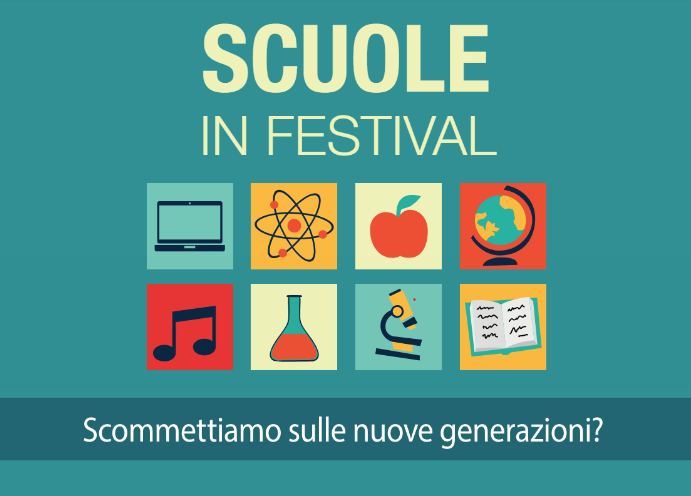

Scrivere per l'ambiente: Il progetto InfoSOStenibile
Il progetto, nato dalla collaborazione con la redazione giornalistica di InfoSOStenibile, ha avuto un obiettivo chiaro: trasformare i dati in consapevolezza ambientale. Tutto è iniziato ad aprile con un'indagine sul campo per mappare le abitudini dei nostri coetanei (dal riciclo al consumo idrico ed energetico). La risposta è stata eccezionale, fornendoci un campione statistico solido di 318 risposte su cui costruire la nostra inchiesta.

Dall'analisi dei dati all'articolo di giornale
L'obiettivo principale era analizzare i dati emersi dal sondaggio per scrivere un vero e proprio articolo giornalistico. Lavorando in un team di quattro persone, abbiamo deciso di concentrarci sul tema del consumo idrico. Nello specifico, abbiamo analizzato lo spreco di tempo, acqua e denaro causato dalle docce troppo lunghe. I dati emersi sono stati d'impatto: il 93% dei rispondenti (299 studenti) perde fino a 423 euro ogni anno.
Perde FINO A 423€ aLL'ANNO
Proiettando questa stima sull'intera popolazione italiana, l'impatto potenziale dello spreco idrico ammonterebbe a 23.210.010.000 € all'anno.